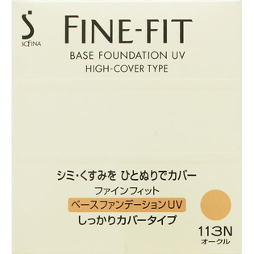
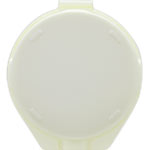

返回列表
产品名称：ソフィーナファインフィット ベースファンデーションUV しっかりカバータイプ

花王 ソフィーナファインフィット ベースファンデーションUV しっかりカバータイプ １１３オークル
メーカー 花王
JANコード 4901301749345
商品の特徴
色：１１３オークル
- 成分・分量
- ＜成分＞
水添ポリイソブテン、ジメチコン、ポリメチルシルセスキオキサン、スクワラン、キャンデリラロウ、メトキシケイヒ酸オクチル、リン酸ジセチルAl、シリカ、パルミチン酸デキストリン、セレシン、セチルPGヒドロキシエチルパルミタミド、BHT、酸化チタン、酸化鉄、マイカ、メチコン、タルク、アルミナ
- 用法及び用量
- ＜使用方法＞
1．基礎化粧品でお肌をととのえた後にお使いください。
（化粧品下地専用品は必要ありません）
2．まず、専用のスポンジで円を描くようにして軽く取り、左右のほおに半分ずつ置いて、顔の中心から外側に向けてのばしてください。
3．次に2よりやや少なめの量をスポンジに取り、ひたい・鼻・あごに置いて、よくのばします。
4．最後にスポンジの何もついていない面でたたくようになじませると、ぴったりとお肌に密着します。